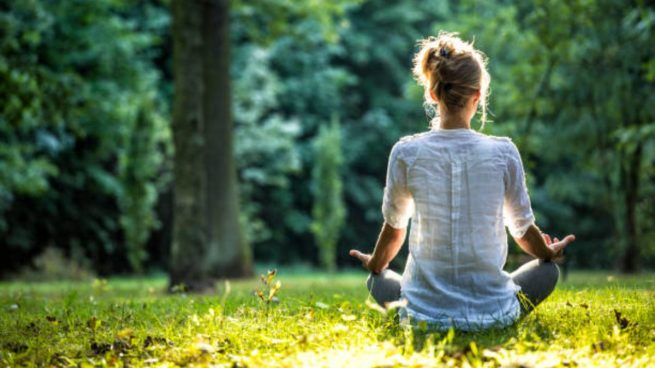

¿Cómo podemos conectar con la naturaleza?
Como hemos visto hasta ahora, volver a conectar con la naturaleza no
es un capricho, sino una necesidad vital para cualquier persona que
desea sentirse bien consigo mismo tanto a nivel físico, como
psicológico y emocional. Pero ¿cómo podemos conectar con la naturaleza
en este siglo XXI tan ruidoso y estresante? De muchas y variadas
formas tan sencillas como las siguientes:
-
Actividades de arteterapia. Ir de excursión y recoger piedras para
pintarlas, ir a buscar moras para hacer un pastel, hacer un paseo
fotográfico por los bellos pueblos de la provincia… Hay multitud de actividades de arteterapia que puedes practicar en pareja o en familia para dar rienda suelta a tu creatividad utilizando los sencillos tesoros que nos hace la madre naturaleza.
-
Deportes al aire libre. Practicar un deporte adaptado a tus
condiciones físicas es sumamente recomendable,pero si además lo
haces al exterior, tus endorfinas se dispararán y los beneficios
físicos y emocionales se multiplicarán.
-
Terapias de meditación guiada. Hoy en día existen multitud de
terapias de meditación guiada que aprovechan la paz y el silencio
del bosque o de la playa para aumentar la eficacia de los
ejercicios: baños de bosque, mindfulness, etc.
-
Programas Life Reset. Los programas Life Reset son una experiencia
nueva que proponemos en el Cerdanya Ecoresort. Aprovechamos el contacto con la naturaleza para focalizar tu atención en aprender hábitos saludables para toda la vida a través de la nutrición integrativa, el control de las emociones o las terapias naturales.Life Reset es, sin lugar a dudas, una experiencia maravillosa,lúdica y saludable para resetear mente y cuerpo conectando con la increíble naturaleza que nos rodea.

¿Qué significa realmente conectar con la naturaleza?
Esta frase: ”conectar con la naturaleza”, puede tener múltiples
sinónimos, pero a nosotros nos encanta uno en particular: biofilia. La
biofilia es un término inventado por el gran psicólogo, filósofo y
humanista Erich Fromm (1900-1980) un escritor que quizá conoces de
obras clave como “El arte de amar” o “El miedo a la libertad”. Según
Fromm la biofilia es “la pasión por todo lo viviente”, una definición
bastante genérica que se podría ampliar como ese sentimiento profundo
(pasión) del ser humano cuando entra en contacto con su entorno, esa
afinidad que los seres humanos sentimos por todos los seres vivos que
nos acompañan en nuestro camino vital incluidos nosotros mismos.
Conectar con la naturaleza es, así
- Aumentar el control de las emociones
- Aumentar la eficacia de los ejercicios
-
Un sentimiento innato al ser humano normal y saludable.
-
Una pasión por proteger, amar y cuidar cualquier ser con
vida,incluidos las plantas y los animales de cualquier especie
(seres humanos incluidos)
-
Una necesidad vital que, si no la satisfacemos, puede tener serios
efectos negativos en nuestra salud física, mental y emocional.